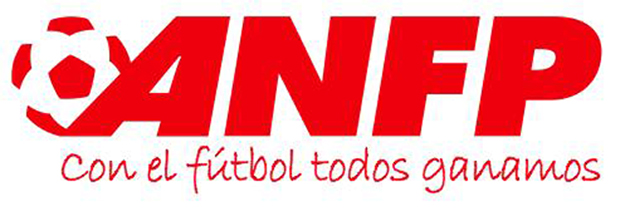

El Campeonato Nacional Petrobras de Apertura de Primera División del Fútbol Profesional 2012, o simplemente Torneo de Apertura 2012, es el primer torneo de la temporada 2012 de la primera division del futbol chileno. El torneo comenzó el 27 de enero y finalizará el 23 de junio. Acerca de su modalidad, se jugará una Fase Clasificatoria, donde se enfrentarán todos contra todos en una sola rueda. Los 8 primeros de la tabla de posiciones general accederán a los play-offs o sistema de eliminación directa, en donde los equipos jugarán en cuartos de final, semifinal y final (partidos de ida y vuelta). Los equipos que participan en la presente edicion del Campeonato Nacional Petrobras de Apertura son; Colo-Colo, Audax Italiano, Cobreloa, U. Catolica, U. de Chile, Rangers, O'higgins,Deportes La Serena, Cobresal, S.Wanders, Deportes Antofagasta, Huachipato, Deportes Iquique, Palestino, Union Española, Union San Felipe, Union La Calera, U. de Concepcion.
 |